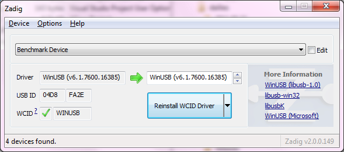

![[Zadig icon]](pics/zadig-128.png) Zadig
Zadig
USB driver installation made easy

Zadig is a Windows application that installs generic USB drivers, such as WinUSB, libusb-win32/libusb0.sys or libusbK, to help you access USB devices.
It can be especially useful for cases where:
- you want to access a device using a libusb-based application
- you want to upgrade a generic USB driver
- you want to access a device using WinUSB
Note: "libusb-based" above means an application that uses either libusb, libusb-win32 or libusbK.
Download
Updated 2024.06.13:
- Zadig 2.9 (5.1 MB)
- Other versions
System Requirements:
Windows 7 or later.Windows XP and Windows Vista are NO LONGER SUPPORTED.
Usage
Download the executable and run it — no installation is necessary.
If elevation is required, you will be prompted for it.
An usage guide for Zadig is available HERE.
The executable is digitally signed and the signature should state: "Akeo Consulting"
Frequently Asked Questions (FAQ)
A Zadig FAQ is available HERE.
To provide feedback, report a bug or request an enhancement please use the github issue tracker. Or you can send an e-mail.
License
GNU General Public License (GPL) version 3 or later.
You are free to distribute, modify or even sell the software, insofar as you respect the GPLv3 license.
Zadig is based on libwdi which uses an LGPL version 3 or later license.
The executable is produced in a 100% transparent manner, from its public source, using a Visual Studio environment.
Changelog
- Version 2.9 (2024.06.13)
- Add libusb-win32 ARM64 driver installation support (courtesy of Peter Dons Tychsen)
Note: Requires Windows 10 1511 or later with x86 (32-bit) emulation support. - Fix UAC not being properly triggered during driver installation (courtesy of Andrew Meyer)
- Embedded drivers: WinUSB v6.1.7600.16385, libusb-win32 v1.4.0.0, libusbK v3.1.0.0 & USBSer (native)
- Add libusb-win32 ARM64 driver installation support (courtesy of Peter Dons Tychsen)
Source Code
- libwdi 1.5.1 source (330 KB). Includes Zadig in the examples directory.
- Alternatively, you can clone the git repository using:
$ git clone git://github.com/pbatard/libwdi
- For more information, see the GitHub project.